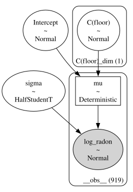
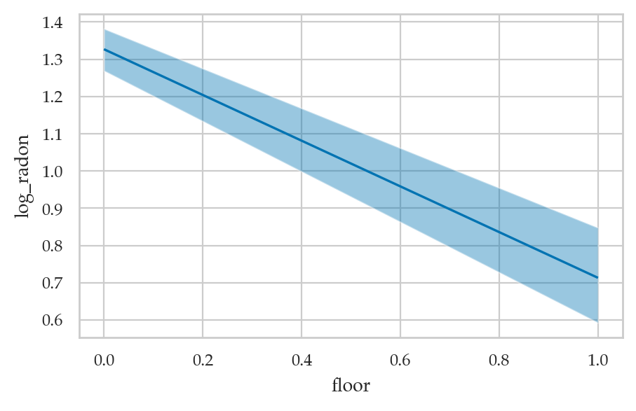
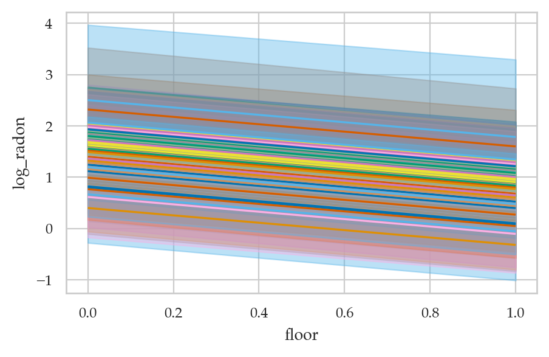
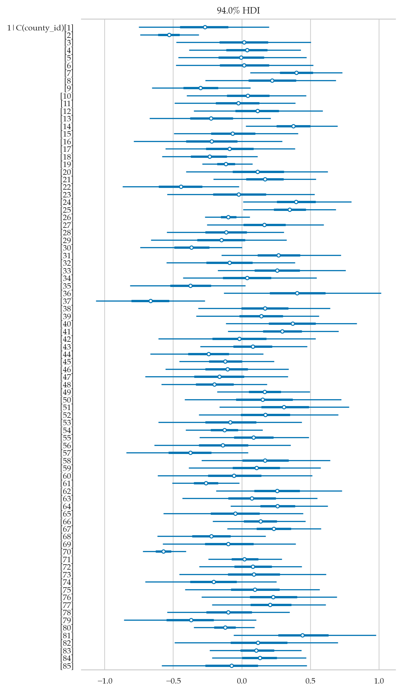

Section 5.5 — Hierarchical models#
This notebook contains the code examples from Section 5.5 Hierarchical models from the No Bullshit Guide to Statistics.
See also:
Notebook setup#
# load Python modules
import os
import numpy as np
import pandas as pd
import seaborn as sns
import matplotlib.pyplot as plt
# Figures setup
plt.clf() # needed otherwise `sns.set_theme` doesn"t work
from plot_helpers import RCPARAMS
RCPARAMS.update({"figure.figsize": (5, 3)}) # good for screen
# RCPARAMS.update({"figure.figsize": (5, 1.6)}) # good for print
sns.set_theme(
context="paper",
style="whitegrid",
palette="colorblind",
rc=RCPARAMS,
)
# High-resolution please
%config InlineBackend.figure_format = "retina"
# Where to store figures
DESTDIR = "figures/bayes/hierarchical"
<Figure size 640x480 with 0 Axes>
# set random seed for repeatability
np.random.seed(42)
#######################################################
Definitions#
Model#
Explanations#
Discussion#
Exercises#
Links#
EXTRA MATERIAL#
Radon levels#
cf. mitzimorris/brms_feb_28_2023
radon = pd.read_csv("../datasets/radon.csv")
# radon["county_id"] = radon["county_id"].astype('category')
radon
---------------------------------------------------------------------------
FileNotFoundError Traceback (most recent call last)
Cell In[4], line 1
----> 1 radon = pd.read_csv("../datasets/radon.csv")
2 # radon["county_id"] = radon["county_id"].astype('category')
3 radon
File /opt/hostedtoolcache/Python/3.10.15/x64/lib/python3.10/site-packages/pandas/io/parsers/readers.py:1026, in read_csv(filepath_or_buffer, sep, delimiter, header, names, index_col, usecols, dtype, engine, converters, true_values, false_values, skipinitialspace, skiprows, skipfooter, nrows, na_values, keep_default_na, na_filter, verbose, skip_blank_lines, parse_dates, infer_datetime_format, keep_date_col, date_parser, date_format, dayfirst, cache_dates, iterator, chunksize, compression, thousands, decimal, lineterminator, quotechar, quoting, doublequote, escapechar, comment, encoding, encoding_errors, dialect, on_bad_lines, delim_whitespace, low_memory, memory_map, float_precision, storage_options, dtype_backend)
1013 kwds_defaults = _refine_defaults_read(
1014 dialect,
1015 delimiter,
(...)
1022 dtype_backend=dtype_backend,
1023 )
1024 kwds.update(kwds_defaults)
-> 1026 return _read(filepath_or_buffer, kwds)
File /opt/hostedtoolcache/Python/3.10.15/x64/lib/python3.10/site-packages/pandas/io/parsers/readers.py:620, in _read(filepath_or_buffer, kwds)
617 _validate_names(kwds.get("names", None))
619 # Create the parser.
--> 620 parser = TextFileReader(filepath_or_buffer, **kwds)
622 if chunksize or iterator:
623 return parser
File /opt/hostedtoolcache/Python/3.10.15/x64/lib/python3.10/site-packages/pandas/io/parsers/readers.py:1620, in TextFileReader.__init__(self, f, engine, **kwds)
1617 self.options["has_index_names"] = kwds["has_index_names"]
1619 self.handles: IOHandles | None = None
-> 1620 self._engine = self._make_engine(f, self.engine)
File /opt/hostedtoolcache/Python/3.10.15/x64/lib/python3.10/site-packages/pandas/io/parsers/readers.py:1880, in TextFileReader._make_engine(self, f, engine)
1878 if "b" not in mode:
1879 mode += "b"
-> 1880 self.handles = get_handle(
1881 f,
1882 mode,
1883 encoding=self.options.get("encoding", None),
1884 compression=self.options.get("compression", None),
1885 memory_map=self.options.get("memory_map", False),
1886 is_text=is_text,
1887 errors=self.options.get("encoding_errors", "strict"),
1888 storage_options=self.options.get("storage_options", None),
1889 )
1890 assert self.handles is not None
1891 f = self.handles.handle
File /opt/hostedtoolcache/Python/3.10.15/x64/lib/python3.10/site-packages/pandas/io/common.py:873, in get_handle(path_or_buf, mode, encoding, compression, memory_map, is_text, errors, storage_options)
868 elif isinstance(handle, str):
869 # Check whether the filename is to be opened in binary mode.
870 # Binary mode does not support 'encoding' and 'newline'.
871 if ioargs.encoding and "b" not in ioargs.mode:
872 # Encoding
--> 873 handle = open(
874 handle,
875 ioargs.mode,
876 encoding=ioargs.encoding,
877 errors=errors,
878 newline="",
879 )
880 else:
881 # Binary mode
882 handle = open(handle, ioargs.mode)
FileNotFoundError: [Errno 2] No such file or directory: '../datasets/radon.csv'
import bambi as bmb
WARNING (pytensor.tensor.blas): Using NumPy C-API based implementation for BLAS functions.
Complete pooling#
mod_cp = bmb.Model("log_radon ~ 1 + C(floor)", data=radon)
mod_cp
Formula: log_radon ~ 1 + C(floor)
Family: gaussian
Link: mu = identity
Observations: 919
Priors:
target = mu
Common-level effects
Intercept ~ Normal(mu: 1.2246, sigma: 2.3354)
C(floor) ~ Normal(mu: 0.0, sigma: 5.7237)
Auxiliary parameters
sigma ~ HalfStudentT(nu: 4.0, sigma: 0.8529)
mod_cp.build()
mod_cp.graph()

idata_cp = mod_cp.fit()
Auto-assigning NUTS sampler...
Initializing NUTS using jitter+adapt_diag...
Multiprocess sampling (4 chains in 4 jobs)
NUTS: [sigma, Intercept, C(floor)]
Sampling 4 chains for 1_000 tune and 1_000 draw iterations (4_000 + 4_000 draws total) took 2 seconds.
import arviz as az
az.summary(idata_cp)
| mean | sd | hdi_3% | hdi_97% | mcse_mean | mcse_sd | ess_bulk | ess_tail | r_hat | |
|---|---|---|---|---|---|---|---|---|---|
| C(floor)[1] | -0.614 | 0.074 | -0.749 | -0.472 | 0.001 | 0.001 | 6615.0 | 2710.0 | 1.0 |
| Intercept | 1.327 | 0.030 | 1.269 | 1.382 | 0.000 | 0.000 | 5416.0 | 3122.0 | 1.0 |
| sigma | 0.823 | 0.020 | 0.785 | 0.859 | 0.000 | 0.000 | 6580.0 | 3132.0 | 1.0 |
bmb.interpret.plot_predictions(mod_cp, idata_cp, "floor")
/Users/ivan/Projects/Minireference/STATSbook/noBSstatsnotebooks/venv/lib/python3.12/site-packages/arviz/rcparams.py:368: FutureWarning: stats.hdi_prob is deprecated since 0.18.0, use stats.ci_prob instead
warnings.warn(
Default computed for conditional variable: floor
(<Figure size 500x300 with 1 Axes>,
array([<Axes: xlabel='floor', ylabel='log_radon'>], dtype=object))
{kind=link}

No pooling#
mod_np = bmb.Model("log_radon ~ 1 + C(floor) + C(county_id)", data=radon)
# mod_np
idata_np = mod_np.fit()
Auto-assigning NUTS sampler...
Initializing NUTS using jitter+adapt_diag...
Multiprocess sampling (4 chains in 4 jobs)
NUTS: [sigma, Intercept, C(floor), C(county_id)]
Sampling 4 chains for 1_000 tune and 1_000 draw iterations (4_000 + 4_000 draws total) took 7 seconds.
The rhat statistic is larger than 1.01 for some parameters. This indicates problems during sampling. See https://arxiv.org/abs/1903.08008 for details
The effective sample size per chain is smaller than 100 for some parameters. A higher number is needed for reliable rhat and ess computation. See https://arxiv.org/abs/1903.08008 for details
fig, axs = bmb.interpret.plot_predictions(mod_np, idata_np, ["floor", "county_id"]);
axs[0].get_legend().remove()
/Users/ivan/Projects/Minireference/STATSbook/noBSstatsnotebooks/venv/lib/python3.12/site-packages/arviz/rcparams.py:368: FutureWarning: stats.hdi_prob is deprecated since 0.18.0, use stats.ci_prob instead
warnings.warn(
Default computed for conditional variable: floor, county_id
{kind=link}

Partial Pooling Model: varying slope#
The partial pooling formula estimates per-county intercepts which drawn
from the same distribution which is estimated jointly with the rest of
the model parameters. The 1 is the intercept co-efficient. The
estimates across counties will all have the same slope.
log_radon ~ floor + (1 | county_id)
mod_pp1 = bmb.Model("log_radon ~ (1 | C(county_id)) + C(floor)", data=radon)
mod_pp1
Formula: log_radon ~ (1 | C(county_id)) + C(floor)
Family: gaussian
Link: mu = identity
Observations: 919
Priors:
target = mu
Common-level effects
Intercept ~ Normal(mu: 1.2246, sigma: 2.3354)
C(floor) ~ Normal(mu: 0.0, sigma: 5.7237)
Group-level effects
1|C(county_id) ~ Normal(mu: 0.0, sigma: HalfNormal(sigma: 2.3354))
Auxiliary parameters
sigma ~ HalfStudentT(nu: 4.0, sigma: 0.8529)
idata_pp1 = mod_pp1.fit()
Auto-assigning NUTS sampler...
Initializing NUTS using jitter+adapt_diag...
Multiprocess sampling (4 chains in 4 jobs)
NUTS: [sigma, Intercept, C(floor), 1|C(county_id)_sigma, 1|C(county_id)_offset]
Sampling 4 chains for 1_000 tune and 1_000 draw iterations (4_000 + 4_000 draws total) took 4 seconds.
az.plot_forest(idata_pp1, var_names=["1|C(county_id)"], combined=True)
array([<Axes: title={'center': '94.0% HDI'}>], dtype=object)
{kind=link}

Partial Pooling Model 2: varying slope, varying intercept#
The varying-slope, varying intercept model adds floor to the
group-level co-efficients. Now estimates across counties will all have
varying slope.
log_radon ~ floor + (1 + floor | county_id)
mod_pp2 = bmb.Model("log_radon ~ (1 + C(floor) | C(county_id))", data=radon)
mod_pp2
Formula: log_radon ~ (1 + C(floor) | C(county_id))
Family: gaussian
Link: mu = identity
Observations: 919
Priors:
target = mu
Common-level effects
Intercept ~ Normal(mu: 1.2246, sigma: 2.1322)
Group-level effects
1|C(county_id) ~ Normal(mu: 0.0, sigma: HalfNormal(sigma: 2.1322))
C(floor)|C(county_id) ~ Normal(mu: 0.0, sigma: HalfNormal(sigma: 5.7237))
Auxiliary parameters
sigma ~ HalfStudentT(nu: 4.0, sigma: 0.8529)
idata_pp2 = mod_pp2.fit()
Auto-assigning NUTS sampler...
Initializing NUTS using jitter+adapt_diag...
Multiprocess sampling (4 chains in 4 jobs)
NUTS: [sigma, Intercept, 1|C(county_id)_sigma, 1|C(county_id)_offset, C(floor)|C(county_id)_sigma, C(floor)|C(county_id)_offset]
Sampling 4 chains for 1_000 tune and 1_000 draw iterations (4_000 + 4_000 draws total) took 7 seconds.
idata_pp2.posterior
<xarray.Dataset> Size: 6MB
Dimensions: (chain: 4, draw: 1000,
C(county_id)__factor_dim: 85,
C(floor)__expr_dim: 1)
Coordinates:
* chain (chain) int64 32B 0 1 2 3
* draw (draw) int64 8kB 0 1 2 3 4 ... 996 997 998 999
* C(county_id)__factor_dim (C(county_id)__factor_dim) <U2 680B '1' ... ...
* C(floor)__expr_dim (C(floor)__expr_dim) <U1 4B '1'
Data variables:
1|C(county_id) (chain, draw, C(county_id)__factor_dim) float64 3MB ...
1|C(county_id)_sigma (chain, draw) float64 32kB 0.412 ... 0.3155
C(floor)|C(county_id) (chain, draw, C(floor)__expr_dim, C(county_id)__factor_dim) float64 3MB ...
C(floor)|C(county_id)_sigma (chain, draw, C(floor)__expr_dim) float64 32kB ...
Intercept (chain, draw) float64 32kB 1.39 1.392 ... 1.396
sigma (chain, draw) float64 32kB 0.754 ... 0.7576
Attributes:
created_at: 2024-11-29T16:29:00.079445+00:00
arviz_version: 0.19.0
inference_library: pymc
inference_library_version: 5.18.0
sampling_time: 7.335843086242676
tuning_steps: 1000
modeling_interface: bambi
modeling_interface_version: 0.14.1.dev12+g3a30784az.plot_forest(idata_pp2, var_names=["1|C(county_id)", "C(floor)|C(county_id)"], combined=True);
{kind=link}